第 10 章 综合实战：三个完整项目
场景：工具都学会了，缺的是"从零到成品"的完整操练。本章三个项目一个练人物、两个练场景（街角与建筑），每个都是"能放进作品集"的完整案例，成品文件和脚本都附在本教材的
examples/文件夹里。
本章的打开方式：不要只读。每个项目跟着做一遍，做完再进下一个。卡住了回翻对应章节（每步都标注了知识点）。
项目 A：低多边形小人（人物建模入门 · 约 1.5 小时）
成品：
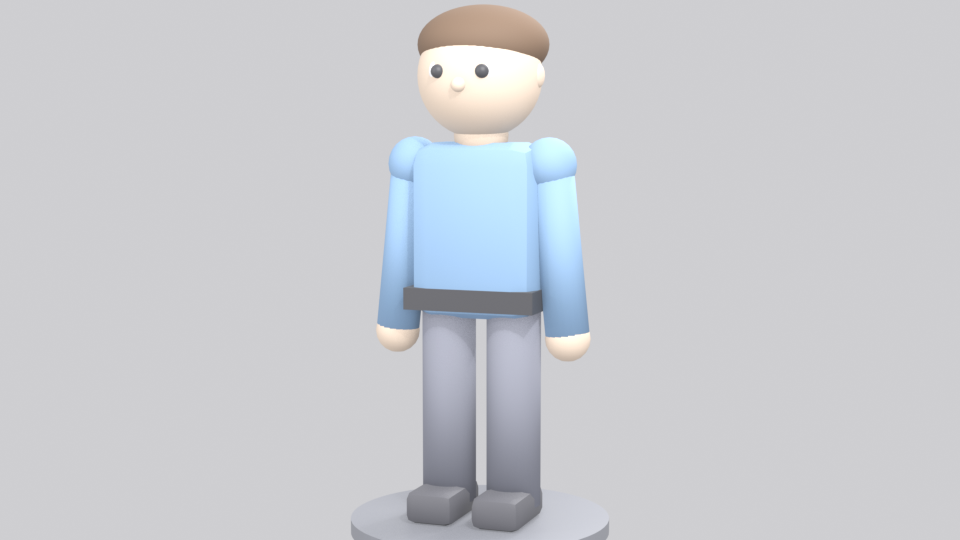
图 61 项目 A 完成后长这样：一个"玩具感"的小人
练什么：人体比例（头身比）、先体块后细化、左右对称、圆角与关节、配色分区。
项目说明：真正的写实角色建模是"雕刻"路线（把模型当成数字黏土捏，见附录 D 的方向四）；本章用你已经会的"体块拼接"做一个低多边形小人——它是理解人体结构的第一步，也是一个能直接放进作品集的可爱成品（examples/小人.blend 可打开对照）。
步骤
① 摆块定比例（知识：先体块，后细节）
人体建模最怕一上来就抠脸。正确姿势：先用灰色体块把"身高比例"摆对。
- 口诀：四头身——整个小人大约 4 个头那么高（这是卡通比例的常用值，真实人类约 7～8 头身）；
- 用最普通的球体（头）、盒子（躯干）、圆柱（四肢）摆出站姿，什么都不细化。
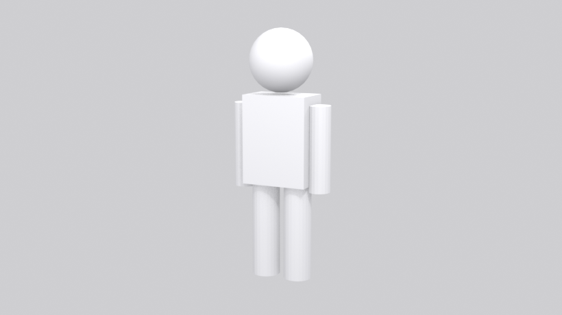
图 62 第 1 步完成：灰色体块版小人，比例已定
② 细化头部（知识：五官的位置规律）
- 头 = 一个球体（
Shift+A加 UV 球，微微压扁一丁点）； - 不管脸多小，五官位置有规律：两只眼睛在头部"正中间"的高度、左右对称；耳朵在两侧同一高度；
- 眼睛 = 两个白色小球 + 两个更小的深色眼珠；鼻子用一个小球点一下；
- 头发 = 一个稍大的球压扁，扣在头顶偏后——"半球帽"就够可爱了。
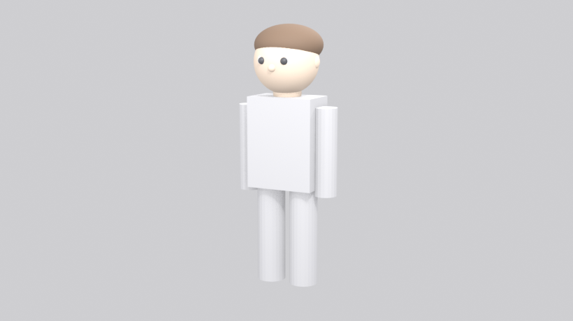
图 63 第 2 步完成：头部有了五官和发型，身体还是体块
③ 细化躯干（知识：圆角让盒子"有肉感"）
- 身体 = 一个盒子 + 倒角（
Ctrl+B）——方盒子立刻变得像"软软的玩偶身子"； - 腰上加一条深色薄盒子当腰带，简单一笔就有"穿了衣服"的感觉。
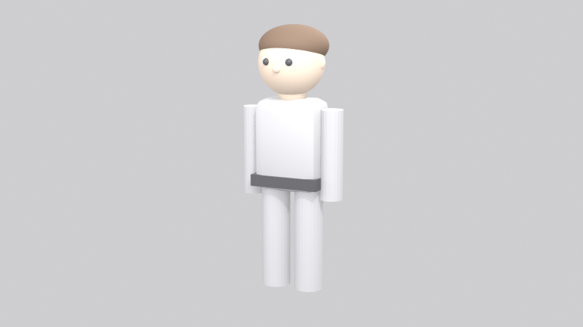
图 64 第 3 步完成：身体变得圆润，还系上了腰带
④ 手臂（知识：对称思维）
- 一侧手臂 = 肩上的小球（关节圆角）+ 一根微微外倾的圆柱 + 一个小球当手；
- 做好一侧之后，选中它
Shift+D复制，移动并镜像到另一侧——这就是第 4 章"镜像思维"的手动版。
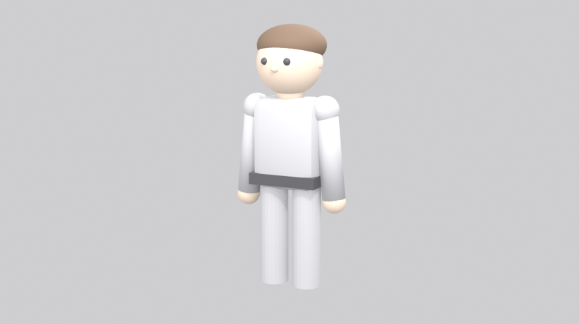
图 65 第 4 步完成：两条手臂就位，注意肩部小球让衔接更自然
⑤ 腿脚（知识：圆柱 + 圆角鞋）
- 腿 = 两根圆柱，微微分开更稳；
- 鞋 = 两个圆角小盒子（倒角处理），向前伸出一点，角色立刻"站得住"。
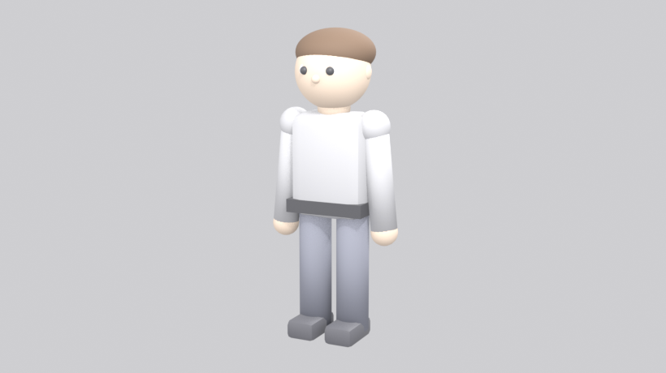
图 66 第 5 步完成：腿脚齐全，站姿稳当
⑥ 底座与配色（知识：配色分区）
- 加一个圆盘当"展示底座"——玩具手办的标准配置；
- 最后一步上色：皮肤、头发、上衣、裤子、鞋各一种颜色。灰模阶段把形定好，颜色是最后的奖励。
图 67 上色完成。从灰体块到彩色小人，全程只用基本体 + 倒角
挑战升级
- 换发型：加一个"刘海块"或两根"发辫"；
- 摆姿势：把手臂/腿旋转一个角度，做一个坐姿或挥手动作；
- 参数化（第 8 章思路）：把"腿长、头径"做成常量，一键生成一个"三头身 Q 版"版本。
项目 B：雨夜便利店街角（挑战级 · 约 3 小时）
成品：
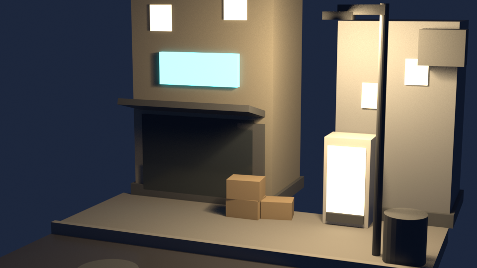
图 68 项目 B 完成后长这样：一个能"变天"的便利店街角
练什么：场景搭建（街道 + 建筑）、贴面细节、发光材质（招牌/贩卖机）、道具思维、氛围营造——同一个场景，白天到雨夜只改灯光和材质。
项目说明：一条马路、一条人行道、两栋楼、一家小小的便利店（发光招牌 + 玻璃门面 + 自动贩卖机 + 门口货箱），一盏路灯。核心看点是最后一步：几何一动不动，一夜之间变雨夜。
步骤
① 街道地面（知识：场景的地基）
- 一条深灰色马路板、一条浅色人行道台（比马路高一截）；
- 在人行道临街边缘加一条窄窄的路缘石（马路牙子）——一个薄盒子，加完场景立刻"专业"起来；
- 记住位置关系：人行道贴马路，路缘石夹在两者之间。
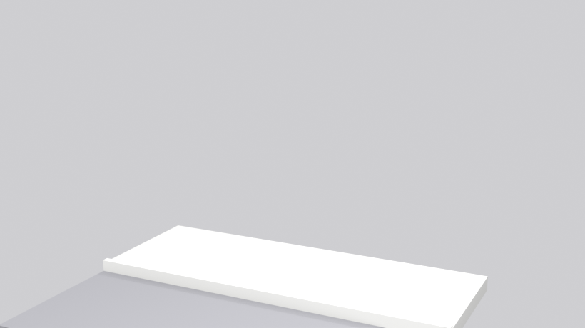
图 69 第 1 步完成：马路、人行道、路缘石三层结构
② 两栋楼（知识：体块 + 基座）
- 主楼（高，留给便利店）、副楼（矮而宽，留给贩卖机）；
- 给每栋楼垫一块比楼体略大的深色薄板当"基座踢脚线"——建筑"长"在路面上而不是"飘"在上面的秘密。
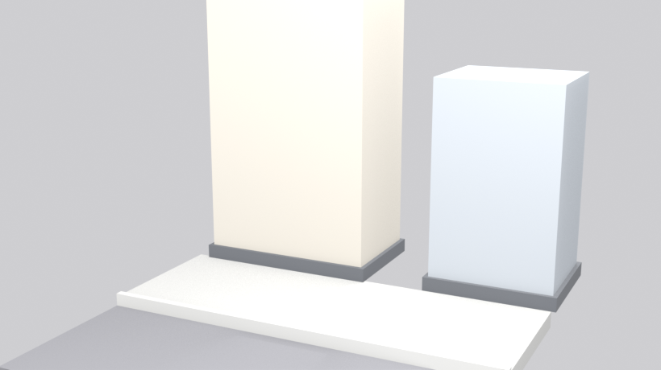
图 70 第 2 步完成：两栋楼归位，基座让它们稳稳站住
③ 便利店门面（知识：贴面细节）
- 主楼一层临街面：一块深色玻璃幕墙薄板 + 一扇玻璃门（深色盒子贴上去）；
- 门面上方加一块微微倾斜的雨棚——斜 14° 左右，顾客还没进门就感到"这是一家店"。
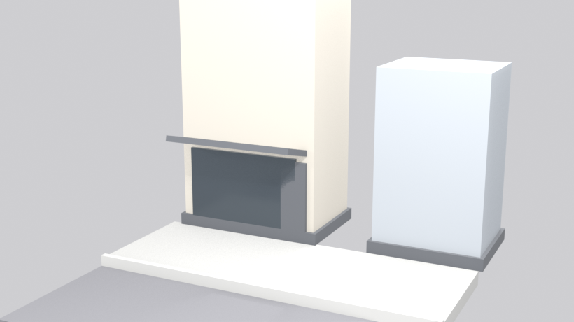
图 71 第 3 步完成：玻璃门面与雨棚，便利店有脸了
④ 招牌与暖窗（知识：发光材质）
- 招牌 = 一块薄板 + 发光材质：把"发光颜色"设成招牌的青色、强度 3～5——这就是霓虹的全部秘密；
- 楼上的窗：白天是深色玻璃，夜里用弱一点的暖色发光。同一个窗块，两种时间身份。
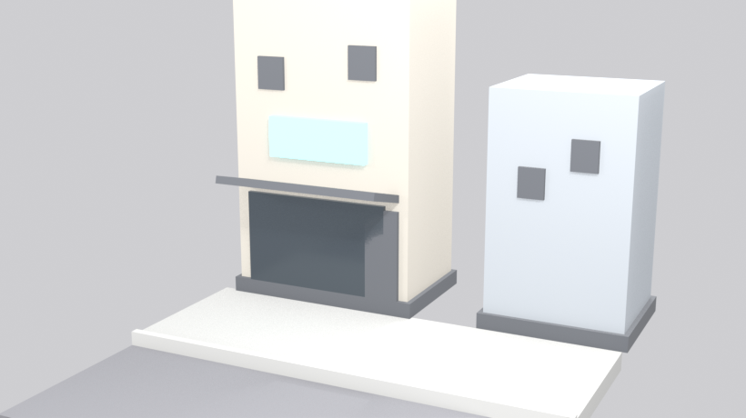
图 72 第 4 步完成：招牌与窗，白天先埋下"伏笔"
⑤ 路灯（知识：细长结构与灯头）
- 路灯 = 细杆 + 微微斜出的吊臂 + 灯头小方块；
- 位置贴着路缘石，为夜晚准备全场唯一的"暖光源"。
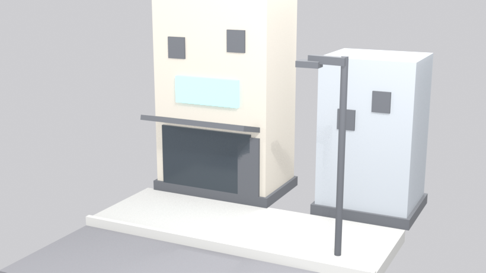
图 73 第 5 步完成：路灯就位
⑥ 街道道具（知识：道具 = 故事感）
- 自动贩卖机：白盒子 + 一块发光面板（夜里它会亮！）——便利店街角的灵魂道具；
- 门口堆两只饮料货箱（木色盒子，转个角度更自然）；
- 加上垃圾桶、井盖（深色扁圆柱嵌进马路）收尾。
- 到这里，**白天的"定妆照"**就完成了——下一张图开始变天。
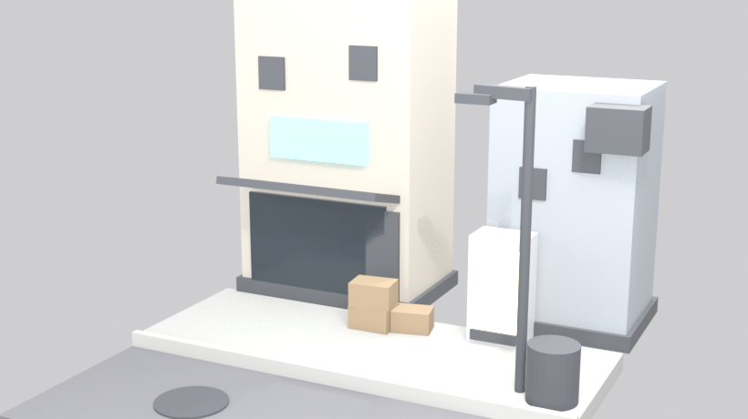
图 74 第 6 步完成：贩卖机、货箱、垃圾桶全部就位（白天定妆照）
⑦ 一夜之间：雨夜模式（知识：氛围 = 灯光 + 材质）
先记住这张白天的同机位画面（就是上图）。然后执行"变天四件事"（几何完全不动）：
- 世界背景：环境色换成深蓝黑（比如 RGB 0.01, 0.02, 0.04）；
- 路灯：在灯头位置加一盏暖色点光，功率调足——暗夜里唯一的暖源；
- 月光：一盏低功率的冷蓝色面光从远处斜上方补光，避免死黑；
- 湿地面：马路材质的粗糙度从 0.85 拉到 0.1 左右——低粗糙度 = 反光 = "地面是湿的"。
招牌的青光、贩卖机的暖光、路灯的光晕映在湿漉漉的马路上——雨夜的灵魂就有了。
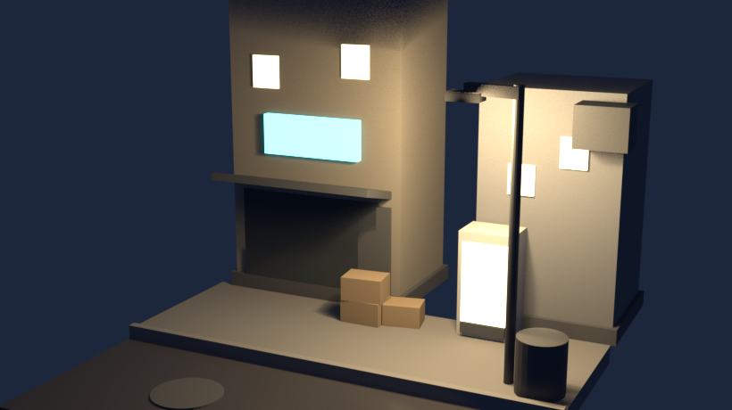
图 75 第 7 步完成：同一机位 · 雨夜。几何一个也没动，只改了灯光与材质
⑧ 出片：把白天的第 6 步图和雨夜的第 7 步图并排一放——"白天 → 雨夜"的对比就是全项目的点睛之笔。最后换一个稍低的角度渲染夜景成品。
挑战升级
- 给马路加"积水"：几块低粗糙度的深色圆片；
- 把招牌颜色换成洋红 / 暖橙再做一版，感受氛围差异；
- 相机属性里开启"景深（Depth of Field）"，焦点对准招牌，背景微微虚化。
项目 C：低多边形小屋（建筑迁移练习 · 约 1 小时）
成品：
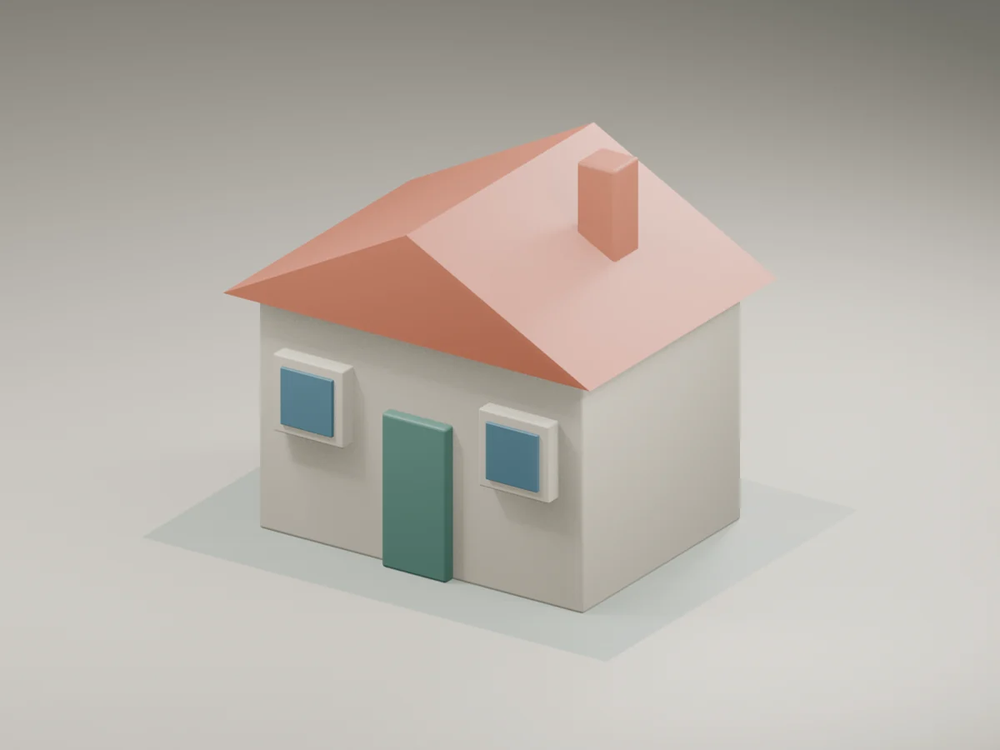
图 76 项目 C 完成后长这样：白墙、陶土橙屋顶的低多边形小屋
练什么：把前两个项目的流程迁移到建筑上——先搭大形、再挂细节、最后收边配色。真正的新技能只有两个：环切定屋脊和正交相机出建筑图，其余全是你已经用过的旧工具。
项目说明：一座小屋 = 墙体 + 屋顶 + 门 + 两扇窗 + 烟囱 + 底座，全部由立方体拼成，门窗不做挖洞；流程仍是：搭大形 → 编辑局部 → 加修改器 → 材质 → 布光 → 出图。本项目的步骤与配图来自教学网站《Blender 工作室 · The Beginner's Field Guide》的同名课程（文字已按本书风格重写，截图版权归原作者、仅用于学习交流）；成品工程已按同样尺寸重新搭好，收在 examples/小屋.blend，做完可以打开对照。
步骤
① 搭大形：墙和屋顶两块"方料"（知识：先体块，后细节）
- 新建文件、按
A全选默认物体、X删除，Shift+C把游标归零（新物体都从原点出生）； Shift+A加立方体当墙体：在 N 面板把位置设为 (0, 0, 1)、缩放 (1.5, 1.1, 1)——默认立方体边长 2，所以实际尺寸是 3 × 2.2 × 2；Ctrl+A→ 缩放（应用后缩放回到 1）；- 再加一个立方体当屋顶方料：位置 (0, 0, 2.45)、缩放 (1.7, 1.3, 0.45)，同样应用缩放；
- 切前视图（小键盘 1）核对：墙顶 Z=2，屋顶每边各探出 0.2 的屋檐余量。
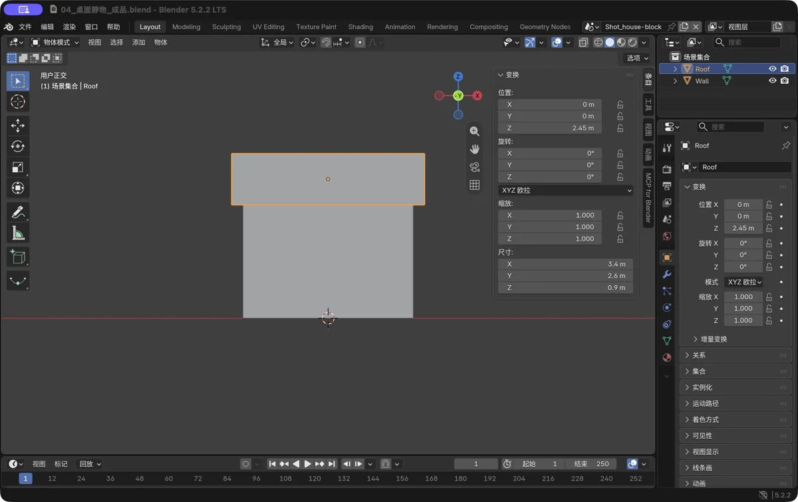
图 77 真实软件截图：墙体和屋顶两块"方料"，先在前视图核对屋檐余量
② 给屋顶埋一道屋脊线（知识：环切 = 提前埋好结构线）
- 选中屋顶，
Tab进编辑模式 → 切边选择（主键盘 2）；Ctrl+R环切，鼠标移到屋顶上，在 X 方向的中间切一道环； - 点击确认后右键，让这道线停在正中间（X=0，绕 YZ 平面）。
这一步是整个项目最值钱的一手：想把方块拉成坡屋顶，就得先把将来要折的那条线预留出来——环切就是"埋结构线"的工具（第 3 章见过它，这里是它的最佳应用场景）。
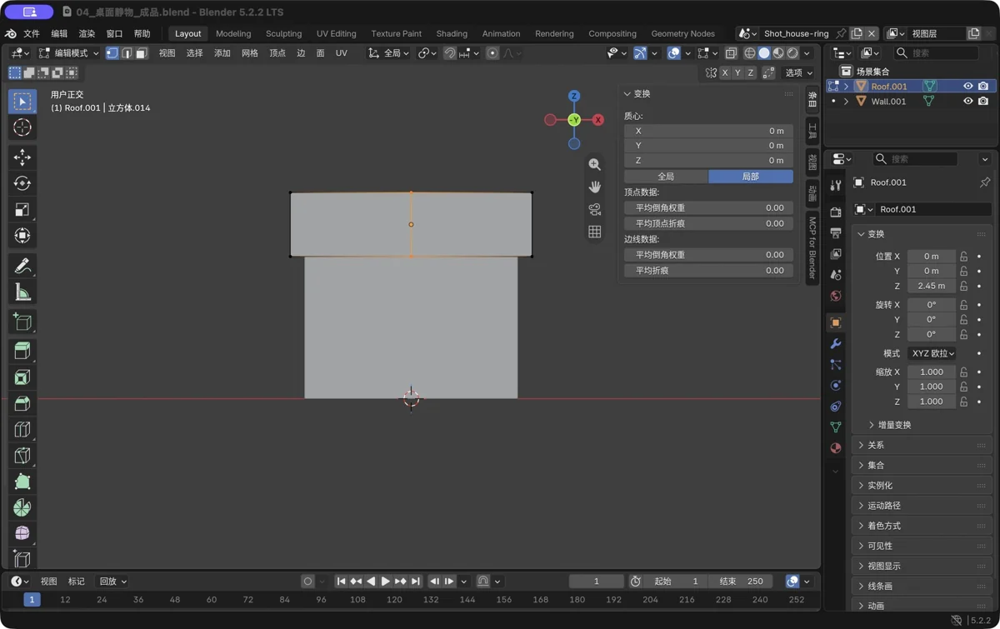
图 78 真实软件截图：屋顶正中间的这道环切——它就是未来的屋脊线
③ 拉坡屋顶（知识：X 光框选 + 按距离合并——第 5 章技能的总动员）
- 顶点选择（主键盘 1），
Alt+A取消全选；按Alt+Z打开 X 光透视——不开它，你选不到背面被挡住的那两个角； - 只选屋顶最上方、左右两侧的 4 个角点（前后各两个），
GZ-0.9把它们落下去；中间那两个顶点绝对不能选——它们是屋脊，留在原地； - 落下后侧边的上下两点会重叠：
A全选 →M→ 按距离（By Distance），阈值0.001；关掉 X 光，Shift+N重算法线； - 检查：屋脊 Z=2.9、屋檐 Z=2、墙顶 Z=2——一个规规矩矩的三角坡屋顶；形状不对就打开
examples/小屋.blend数数它的顶点，再重做一次。
⚠️ 本步必错点：框选时把屋脊那两列顶点一起圈走了，屋顶会被压平或拧麻花。开着 X 光慢慢框，选完先数一数：是 4 个吗？
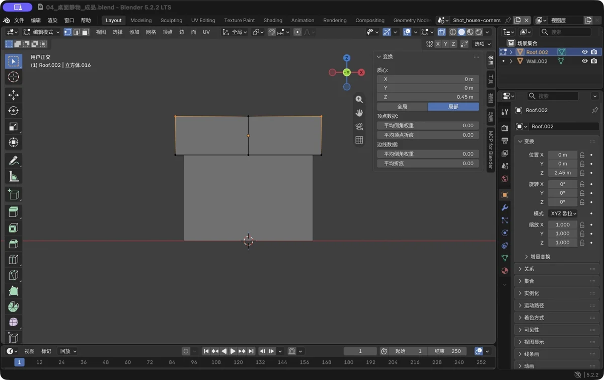
图 79 真实软件截图：X 光下只框选最上方的 4 个外侧角点（中间两个必须留下）
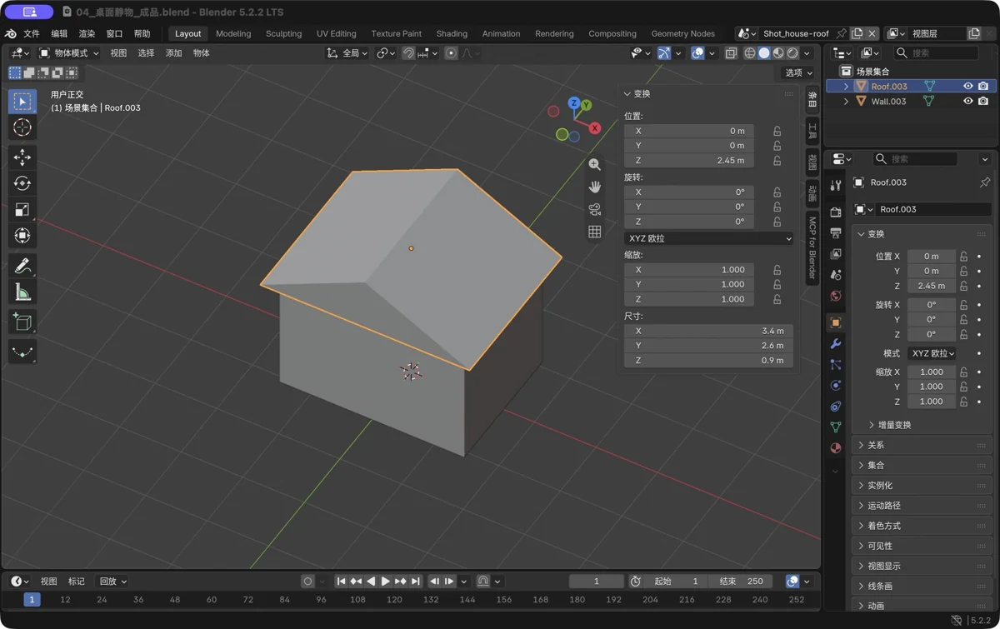
图 80 真实软件截图：两侧角点落下、按距离合并之后，三角屋顶就位
④ 门和两扇窗（知识：贴面细节——不挖洞也有门面）
建筑的省事秘诀：门窗都不用挖，是"贴"上去的。墙的前表面在 Y=-1.1，所有门窗往前站一点点。接下来每个部件都是同一个动作：Shift+A 加立方体 → N 面板输入尺寸和位置（还记得第 2 章的提醒吗：尺寸 ≠ 缩放倍率）→ Ctrl+A 应用缩放。
- 门：尺寸 X 0.6、Y 0.12、Z 1.3，位置 (0, -1.14, 0.65)——前视图核对：门下缘正好贴地（Z=0）、居中；侧视看门背面要嵌进墙里，不留缝；
- 窗框：尺寸 (0.65, 0.16, 0.65)，位置 (-0.95, -1.16, 1.25)；选中它
Shift+D复制 →X→1.9→ 回车，右窗到位（X=0.95）； - 窗面：尺寸 (0.48, 0.04, 0.48)，位置 (-0.95, -1.25, 1.25)——Y 更负 = 更靠前，它盖在窗框前面，四周留出一圈白边；同样
Shift+D复制到右边； - 前视图检查：两窗对称、白边宽度一致。
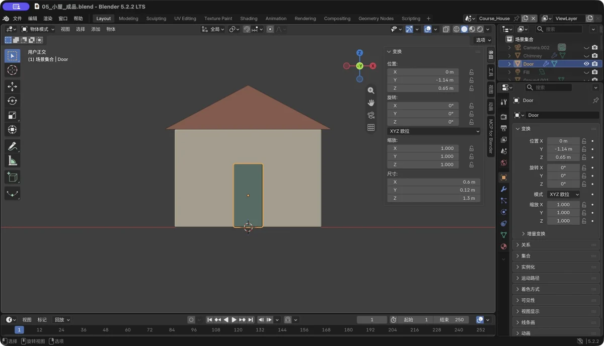
图 81 真实软件截图：门的尺寸与位置——下缘贴地、背面嵌进墙面
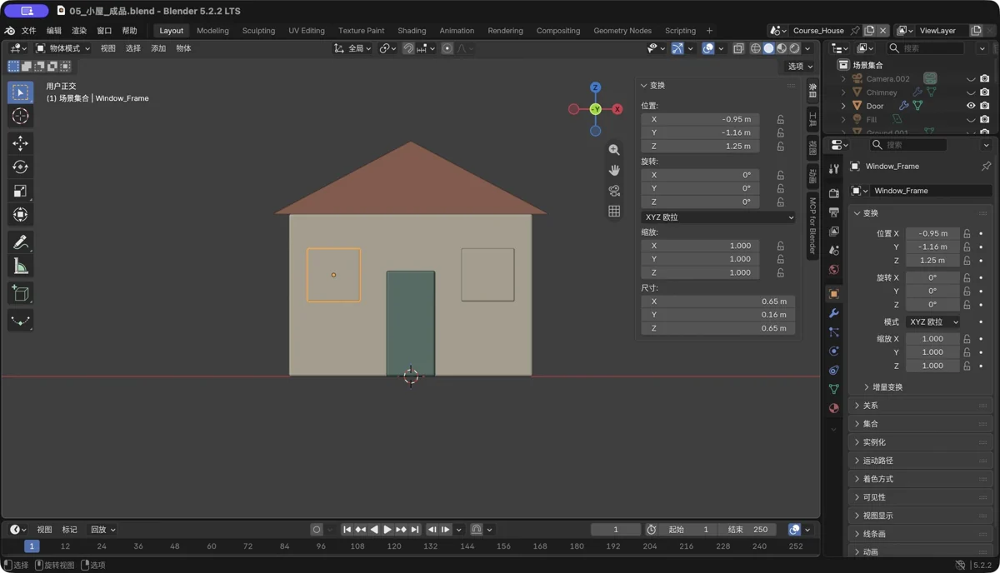
图 82 真实软件截图：两块窗框一左一右（右边那扇是复制出来的）
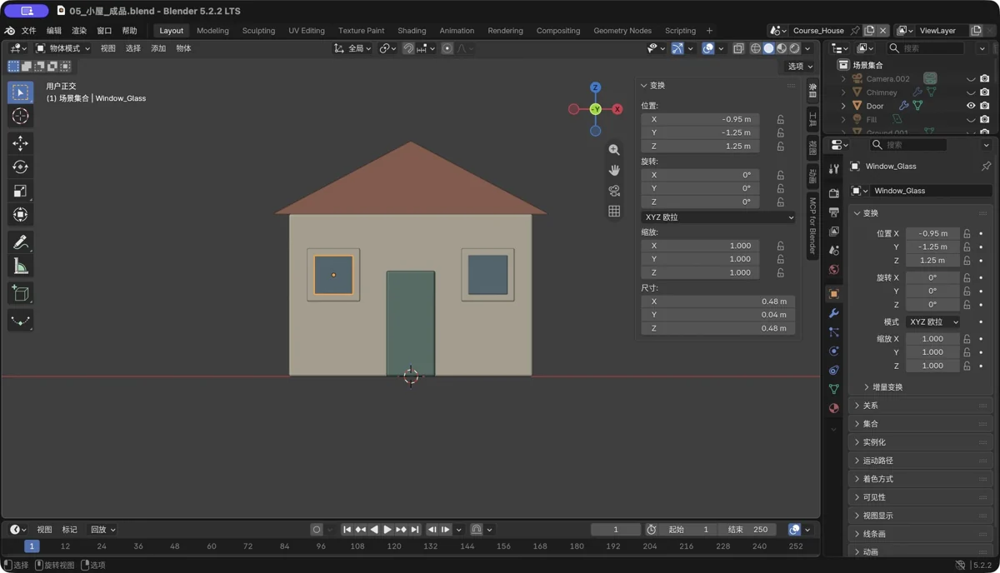
图 83 真实软件截图：窗面盖在窗框前面，四周留出一圈白边
⑤ 烟囱（知识：部件要"插进去"，别浮空）
- 立方体，尺寸 (0.35, 0.35, 0.9)，位置 (0.8, 0.3, 2.7)；
- 转到斜上方检查：烟囱下端要没进屋顶里。判断"插没插进去"永远看斜视角——正面看不出浮空。
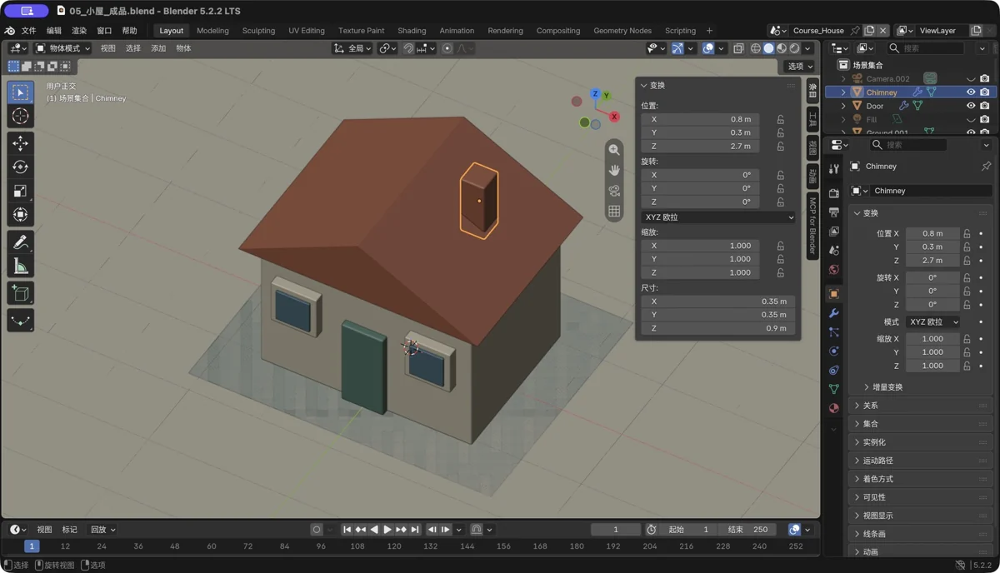
图 84 真实软件截图：烟囱竖直插进屋顶，下端不能悬空
⑥ 底座（知识：让上表面正好落在 Z=0）
- 立方体，尺寸 (4.4, 3.6, 0.24)，位置 (0, 0, -0.12)；
- 算一算：-0.12 + 0.24 ÷ 2 = 0——底座上表面正好承接墙底，小屋四周留出一圈底座边。
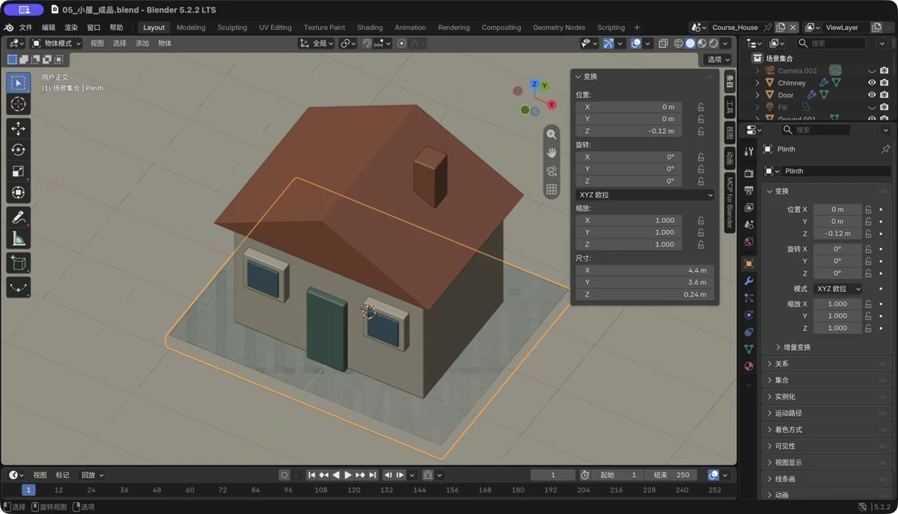
图 85 真实软件截图：底座上表面正好在 Z=0，稳稳托住小屋
⑦ 收边与配色（知识：倒角 + 逐件材质）
- 选墙体（先
Ctrl+A应用缩放）→ 添加倒角修改器：数量0.03、分段 3、角度限定 30°——边缘微微圆润，但不能改掉体块感；底座同款倒角0.05；屋顶保持硬边（低多边形的"棱角味"全靠它）； - 上色沿用第 6 章流程，这次逐个物体指定：墙体暖白（金属度 0、粗糙度约 0.5）、屋顶陶土橙、门深绿、窗面深蓝（不透明）、底座灰绿，窗框直接共用墙体材质；
- 切"材质预览"看整体彩色效果——老规矩：预览的环境光 ≠ 场景灯光。
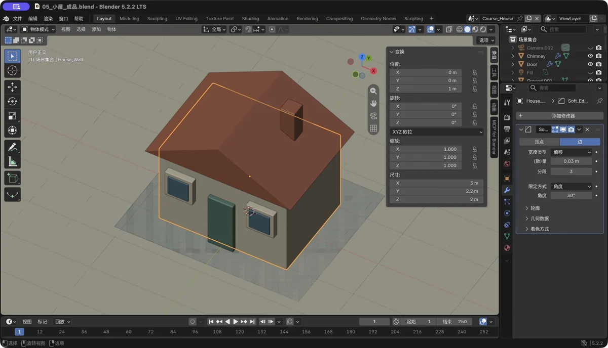
图 86 真实软件截图：墙体的倒角修改器——数量 0.03、分段 3、角度限定 30°
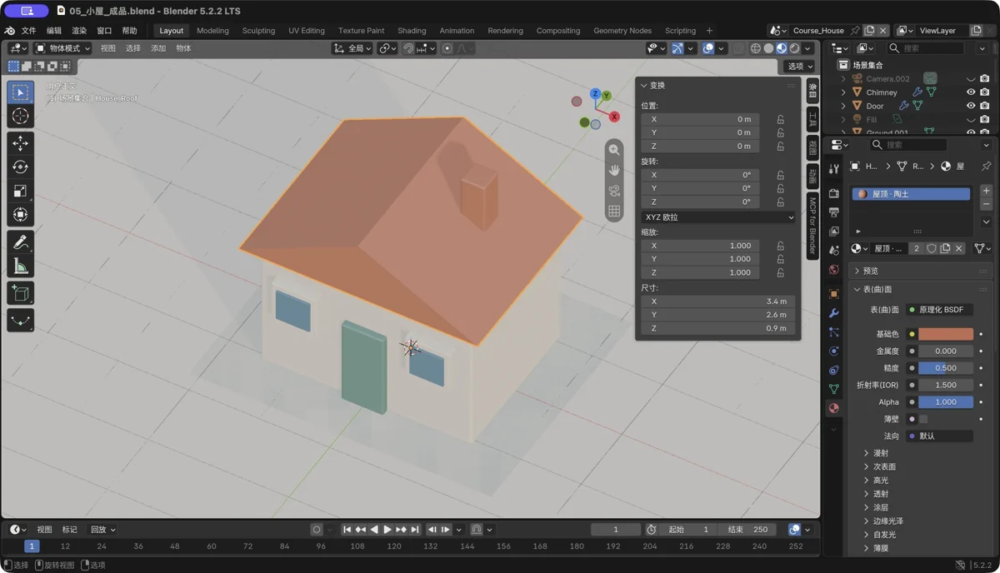
图 87 真实软件截图：逐件指定材质——在材质属性里核对基础色
⑧ 布光（知识：三盏面光，各司其职）
- 主光：面光，位置 (-3, -4, 7)、功率 950 W、尺寸 5 m——从左前上方来；
- 补光：位置 (4, -1, 4)、300 W、尺寸 4 m——把暗部提到能看清即可，别抢戏；
- 轮廓光：位置 (1, 4, 5)、600 W、尺寸 3 m——从后方勾一条亮边，让小屋从背景里"立"起来；
- 每盏灯都在右侧灯光属性里输好数值、旋转朝向小屋中心；切渲染预览检查。
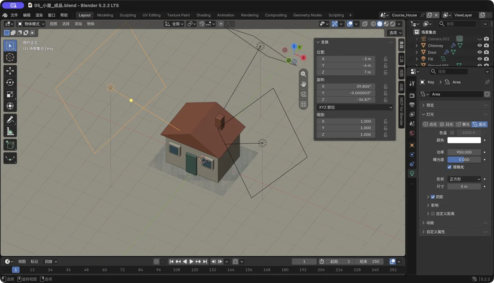
图 88 真实软件截图：三盏面光就位——右侧面板直接改功率和尺寸
⑨ 相机与出图（知识：正交相机 + 输出设置）
- 加相机，位置 (6, -9, 6)、对准 (0, 0, 1.25)；更快的摆法是"从视口对齐"：先把视角转到满意的斜上方 → 视图 → 对齐视图 → 将活动相机对齐到当前视图（
Ctrl+Alt+小键盘 0），再微调； - 相机属性的类型改成正交、正交比例 7.7——建筑出图首选正交，墙面才不会"近大远小"（第 7 章说的"工程图感"，这里正式上工）；比例数值越大，画面里的小屋越小；
- 小键盘 0 进相机视图，检查画框内屋顶、正面、底座都完整、四周留白均匀；
- 输出属性：1500 × 1125、100%、EEVEE 引擎；先
Ctrl+S把工程存好（比如house_v01.blend），再"渲染 → 渲染图像"（F12）； - 渲染完成后，在渲染结果窗口"图像 → 另存为"存 PNG（
house_final.png）——保存 .blend 不会自动保存图片，两个都要存，最后用看图软件确认 PNG 真的在。
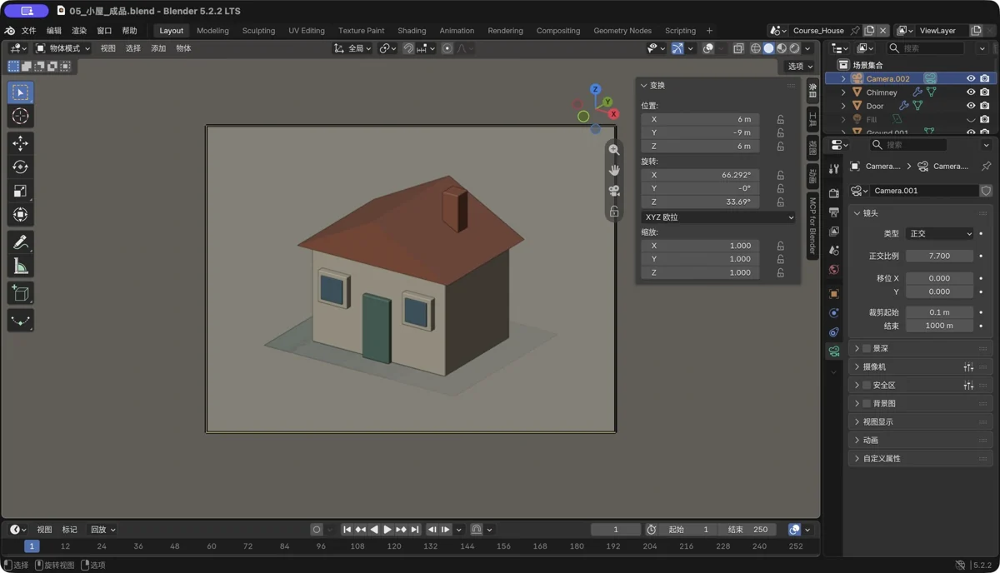
图 89 真实软件截图：正交相机比例 7.7——屋顶、正面、底座都在框内
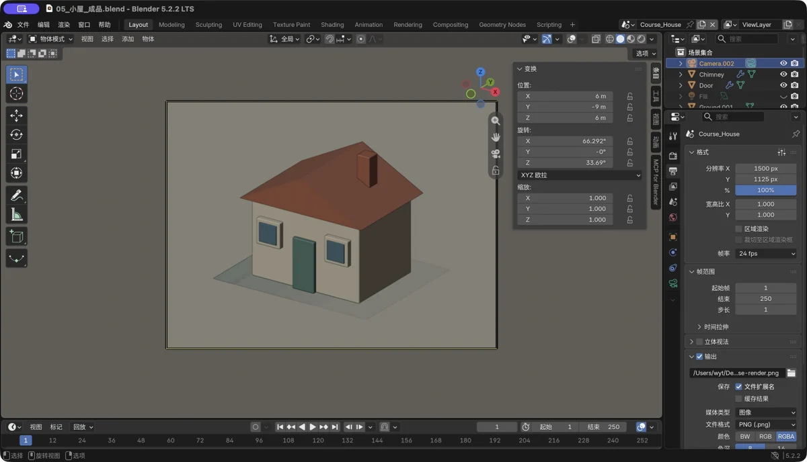
图 90 真实软件截图：输出 1500×1125——渲染完还要在图像菜单里另存 PNG
变体挑战
从这三项里选至少两项改掉：墙体长宽比、屋顶高低、门窗布局（加一扇侧门？单窗改双窗？）。只换颜色不算数——这个项目练的是"结构迁移"。改完检查三件事：窗没跑到墙外、屋顶盖得住墙顶、烟囱不浮空。
完成这三个项目之后
你现在应该已经体会到：所有复杂作品，拆开都是"体块 + 细节 + 材质 + 光"。剩下的只是熟练度和审美积累。
下一步的成长路线（详见附录 D）：
- 把项目 A、B、C 各做 3 个变体（换配色、换时间、换布局）——熟练度是靠变体堆出来的；
- 对人物感兴趣？去了解 Blender 的雕刻模式（Sculpt）——那是写实角色的正道，也是你的下一个台阶；
- 找一个自己的真实爱好目标（你的键盘、你的球鞋、你的房间），照着参考图完整做一次——那才是你自己的"毕业设计"。
过关标准
- 项目 A：小人站得住、五官清楚、有自己的配色；
- 项目 B：白天和雨夜是同一机位，夜晚效果主要来自灯光与材质（几何没大改）；
- 项目 C：屋顶从正面看有清楚的三角剪影；门窗贴在前表面、没有共面闪烁；我完成了至少两项结构变体；
- 我至少完整保存过一个项目，并能重新打开接着改。
本章自检
- 三个项目里，最常用到的建模操作是哪三个？（答案：
Shift+A添加、G移动、S缩放——大道至简） - 人物建模的"四头身"口诀是什么意思？（答案：整个身高约等于 4 个头高，卡通小人常用比例）
- 冷知识：项目 B 里"雨夜"的实现用到新几何了吗？（答案：没有。只改灯光与材质参数而已）
- 小屋的坡屋顶是"新加"的零件吗？（答案：不是。是一道提前埋好的环切屋脊线——把两端角点落下去、再按距离合并出来的）
- 墙体尺寸要 3 × 2.2 × 2，默认立方体的缩放该填多少？（答案：(1.5, 1.1, 1)——缩放是倍率，边长 2 乘 1.5 才是 3）